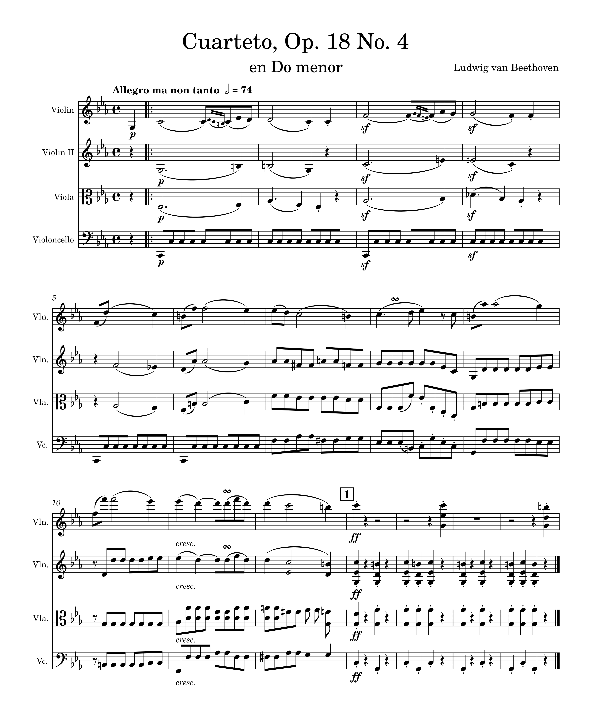

Notation Basics
Week 2
Converting a PDF to Musescore
Identify a piece of music to download and edit.
Beethoven's String Quartet No. 4 (Op. 18 No. 4), click here to view.
Download the PDF and then convert it to MuseScore. Edit at least 10 bars in MuseScore.
Edited MuseScore file:
Download the file here.
Some of the changes needed:
- Had to add score information (e.g. title, composer, tempo text, etc.).
- Instrumentation was incorrect, converted score had all parts as "voice" instead of the correct quartet instruments.
- Some ornamentation and articulation had to be added.